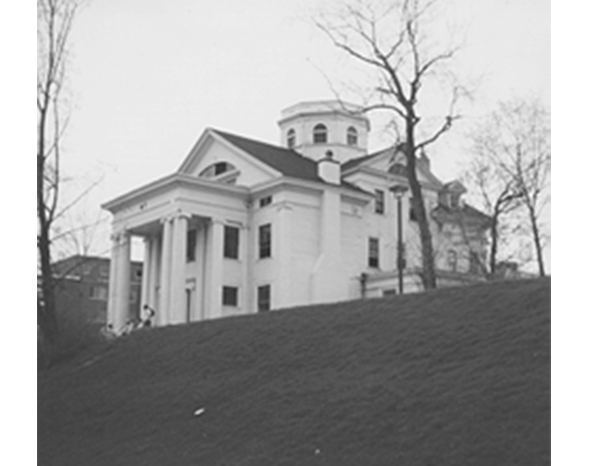

Chapter 16 on the roll
The Pi


- Position on the roll#16
- InstitutionSyracuse University
- Chartered1875
- StatusActive since 1875
- Coat of armsfull-size PDF
In the archive
Pages that name the Pi Chapter or its institution.
Named on 1115 pages across 365 volumes of the archive.
…onvention. Bro. Elliot of the Xi then read and advocated the petition from Syracuse University. Bro. Adams (r) introduced the following resolution (No. i): Resolved., by the General Con vention of the Psi Upsilon Fraternity, That the petition f…
Page7…mmunication was then submitted by Bro. Clark {Zeta), from Bro. Elliott, of Syracuse University, and was referred to Committee on New Business. Bro. Smiley {Xi) introduced the following General Resolution : Resolved by the General Convention of…
…wers of the Executive Council. 3. Petition for a Chapter of Psi Upsilon at Syracuse University. 4. Petition for a Chapter of Psi Upsilon at the Northwestern Uni versity. 5. Certificates of membership. 6. Fraternity colors. 7. Installation cerem…
…tee discharged. Bro. Cobb {Psi), then presented a petition from members of Syracuse University for the establishment of a Chapter of Psi Upsilon at that University, which was referred to Committee on New Business. Bro. Stanchfield, Chairman of…
…orm a Chapter of the Fraternity at Syracuse University, to be known as the Pi Chapter. The Pi Chapter was accordingly founded on the 8th day of June, 1875. The Council are happy to report that the new Chapter is flourishing as well as…
Page29…o. C. Coffln, ex -Treasurer, balance S4 46 $3 52 Jan. 29, 3, 24, 26, 1877. Pi Chapter, Chi Psi Sigma ' ' Taxi or 1877 21 00 20 00 10 00 18 00 6 30 Feb. (( 6 00 ,, 3 00 1876, with interest . . 5 40 26, " 1877 23 00 6 90 28, Iota ' ' 187…
Page19THE DIAMOND. 3 PI (Syracuse University 187s).� Chapter Rooms, Clary Block, Clin ton stre.et, Syracuse ; meets Friday evening; correspondence to Mr. M. D. Ba;bcock, Drawer 128, Syracuse, N.…
Page3…1869).�Correspondence to Mr. J. D. S. Riggs, University, Chicago, 111. PI (Syracuse University 1875).�Correspondence tb Mr. M. D. Bab cock, Drawer 128, Syracuse, N. Y. CHI (Cornell University 1876).�Correspondence to Mr. L. H. Por ter, Lock Box…
Page8…869).� Correspondence to Mr. J. D. S. Riggs, University, Chicago, 111. PI (Syracuse University 1875).� Correspondence to Mr. M. D. Bab cock, Drawer 128, Syracuse, N. Y. CHI (Cornell University 1876).�Correspondence to Mr.'W. H. Fox, Lock Box II…
Page3…869).� Correspondence to Mr. J. D. S. Riggs, University, Chicago, 111. PI (Syracuse University 1875).�Correspondence to Mr. M. D. Bab cock, Drawer 128, Syracuse, N. Y. CHI (Cornell University 1876).�Correspondence to Mr.W. H. Fox, Lock Box n, I…
Page8…o 1869).�Correspondence to Mr. W. G. Sherer, University, Chicago. 111. PI (Syracuse University 1875).�Correspondence to Mr. J. W. Wil son, Dra-wer /r, Syracuse, N. Y. CHI (Cornell University 1876).�Correspondence to Mr. F. A. Wright, Box 746, I…
Page4…o 1869).�Correspondence to Mr. W. G. Sherer, University, Chicago. 111. PI (Syracuse University 1873).�Correspondence to Mr. J. W. Wil son, Drawer 71, Syracuse, N. 'Y. CHI (Cornell University 1876).�Cqrrespondence to Mr. J. S. Lawrence, Lock Box…
Page8…h precludes his election. " 2. General Resolution No. II, presented by the Pi Chapter : The Com mittee recommends that the resolution be adopted. "3. General Resolution No. Ill, presented by the Zeta Chapter: The Committee recommends t…
Page11…o Mr. Henry O. Van Schaack, 37 Twenty-second street, Chicago, 111. 16. P7 (Syracuse University 1875).�Correspondence to Mr. Ste phen B Ayres, Jr., lock box 75, Syracuse, N. Y.' IT. CH"/ (Cornell University 1876).�Correspondence to Mr. W. D. Hol…
Page16…go, Chicago, 111. , 1.6, PJ (Syracuse University, 1875).�Correspondence to Pi Chapter of Psi Upsilon,. room 13, Hendricks'' Block, Syracuse, N..Y. 17. CflJ (Cornell University, 1876).�Correspondenceto Mr. Henry M. Dibble, lock box 11,…
Page8…cago, Chicago, 111, 16. PZ"(Syracuse University, 1875).� Correspondence to Pi Chapter of Psi Upsilon, room 13, Hendricks' Block, Syracuse N, Y. 17. CaZ (Cornell University, 1876).�Correspondence , to Chi Chapter of Psi Upsilon, lock bo…
Page8…Annual Convention OP THE Psi Upsilon Fraternity, HELD WITH THE PI CHAPTER, SYRACUSE UNIVERSITY, SYRACUSE, N. Y, Wednesday /nd Thdi^sdjiy, May 10th and 11th, 1882. No. XI of the Printed Series. PUBLISHED BY THE EXECUTIVE COUNCIL. 1882.
…The XLIXth General Convention of the Fratern ity will take place with the Pi Chapter, at Syracuse University, Syracuse, N. Y. , Wednesday, May Kith, and Thursday, May \lth. The Orator is the Hon. Chauncey M. Depew, {Beta '56.) The Poe…
Page8…VENTION. The forty-ninth annual Convention of Psi UpsUon was held with the Pi Chapter, at Syracuse, N. Y., May 10th and 11th 1882 ; every Chapter was repre sented by official delegates, and a large number of graduates participated in t…
Page9…in the presence of many of our alumni, and of nine of the Brothers of the Pi Chapter, the six finest men that the Freshman class affords. The Uterary exercises of the Chapter are again in running order, and promise to be unusually int…
Page12…ution be amended by adding to Article VI. a section to be caUed Section 9. The Pi Chapter shall have power to initiate such graduate members of the Upsilon Kappa Society as it may elect by a unanimous vote. No. II.^Resolved, &a.. That the…
…Avenue, Chi cago, 111. Pi (Syracuse University, 1875)� Corres pondence to Pi Chapter of Psi Upsilon, Rooms 1% Hendrick's Block, SyracttSfe, N. Y. Chi (Cornell University, 1876)� Corres pondence to Chi Chapter of Psi Upsilon, Box 1452,…
Page13…Avenue, Chi cago, 111. Pi (Syracuse University, 1875)� Corres pondence to Pi Chapter of Psi Upsilon, Rooms 13, Hendrick's Block, Syracuse, N.Y. Ch I (Cornell University, 1876)� Corres pondence to Chi Chapter of Psi Upsilon, Box 1452,…
Page13…ation, in the summer of 1875, of the sixteenth chapter� the The Pi. Pi, at Syracuse University. This cen tral New York institution was the suc cessor of Genesee University, at which, in 1863, had been formed a local society under the name of Up…
Page76…44.57. 12. The Upsilon Kappa. � The Council is requested, on behalf of the Pi Chapter, to inform the Convention that "as the Chapters did not act upon Gen. Ees. No. 9 of the last Convention until after Commencement, the Pi concluded to…
Page14…lf to the brothers. 1884 will be pregnant with results to our institution. Syracuse University is the only Methodist college in New York State ; and as this year is the centennial anniversary of the founding of the Methodist church in America,…
…mega Chapter of Psi Upsilon, 3400 Cottage Grove Avenue, Chi cago, III. Pi (Syracuse University, 1875)� Corres pondence to Pi ChaptOT of Psi Upsilon, Rooms 13, Hendrick's Block, Syracuse, N.Y. Chi (Cornell University, 1876)� Corres pondence to C…
Page17…Avenue, Chi cago, 111. Pi (Syracuse University, 1875)� Corres pondence to Pi Chapter of Psi Upsilon, Rooms 13, Hendrick's Block, Syracuse, N.Y. Chi (Cornell University, 1876)� Corres pondence to Chi Chapter of Psi Upsilon, Box 1452, I…
Page13…Avenue, Chi cago, 111. Pi (Syracuse University, 1875)� Corres pondence to Pi Chapter of Psi Upsilon, Rooms 13, Hendrick's Block, Syracuse, N.Y. Chi (Cornell University, 1876)� Corres pondence to Chi Chapter of Psi Upsilon, Box 1452, I…
Page13…1874. Convention held with the Kappa (Bowdoin) Chapter . . May 5, 6, 1875. The Pi Chapter established in Syracuse University . . June 8, 1875. The Phi (Michigan) Chapter incorporated December, 1873. Psi Upsilon " Leaves " issued at Ithaca,…
…enyon College ..Gambier, O. PHI University of Michigan Ann Arbor, Mich. PI Syracuse University . .. Syracuse, N. Y. CHI Cornell University .Ithaca, N. Y. B^TA-BETA;... Trinity College. Hartford, Conn. ETA Lehigh U.niver.sity Bethlehem, Pa. GRAD…
Page130…racuse University, which organization, founded ia August, 1863, became the Pi Chapter of Psi Upsilon on June 8, 1875. SONG OF PSI UPSILON. [Page 66.] This song was written in Bro. De MUle's undergraduate days, and set to music by his c…
…60, the University of Michigan in 1865, the University of Chicago in 1869, Syracuse University in 1875, Cornell University in 1876, Trinity College in 1880, and the Lehigh University in 1884. The University of Pennsylvania and the University of…
…the upper classes of the new university, has applied fOr recognition. Pi.�Syracuse University. A class of thirteen men� the largest in the history of the Chapter� will be initiated Friday evening, October 11 th, at the Chapter House, 763 Irvin…
…b, composed of undergraduates, stands ready to receive the' charter. Pi. � Syracuse University. At the annual ini tiation held at the Chapter House, on the evening of Friday, October 11, 1895, the following were admitted into Psi Upsilon : John…
Page32…he work of the Biological Department is to be carried on, has been broken. Syracuse University now has an enrollment of 1,012 students, a gain of more than one hundred since last year. ' There are four colleges: Liberal Arts, Fine Arts, Medicin…
…y members of the Phi. Pi. � Syracuse University. On Tuesday, April 26, the Pi Chapter entertained at dinner Professor WiHiam J, Rolfe (Gamma '49) the Shakesperian scholar and critic. Prof. Rolfe gave two lectures in Syracuse on that da…
Page46…82, Chicago, 111. tTheodore Morelle Hammond, '85, Chicago, 111. PI CHAPTER SYRACUSE UNIVERSITY. tDavid Eugene Smith, '81, Ypsilanti, Mich. E. Bersie Lee, '96, CHI CHAPTER� CORNELL UNIVERSITY. Emory Brady Wendell, '85, Detroit, Mich. Ezra C. Bla…
Page35…ECORDS CONVENTION OF THE Psi Upsilon Fraternity, HELD WITH THE PI CHAPTER, SYRACUSE UNIVERSITY, SYRACUSE, N. Y.- Thursday and Kriday, Nlay lO and 11, 19 OO. No. XXIX. of the Printed Series. PUBLISHED BY THE EXECUTIVE COUNCIL. The Sixty-seventh…
…chapter favoring the application the vote was unanimous except that in the Pi Chapter the vote was 27 to 3. Under Article III Section 2, of the Constitution, the application has been denied. The Council submit herewith copy of a resolu…
Page14…g standing at Syracuse University, were the recipients of a charter as the Pi Chapter of Psi Upsilon. One year later, after the efforts of President _W_ Andrew D. White, Professor Willard Fiske, and other loyal brothers, had gained una…
Page12…s. On roll-call the delegates made their reports down to and including the Pi Chapter; and as lunch hour had arrived the Chair entertained a motion by Bro. Gray (Beta) that
Page8…ch. OMEGA � University of Chicago 5639 University Ave., Chicago, 111. PI � Syracuse University 101 CoUege Place, Syracuse, N. Y. CHI � Cornell University 1 Central Ave., Ithaca, N. Y. BETA BETA � Trestity College 81 Vernon St., Hartford, Conn.…
…ch. OMEGA � University of Chicago 5639 University Ave., Chicago, 111. PI � Syracuse University 101 College Place, Syracuse, N. Y. CHI � Cornell University 1 Central Ave., Ithaca, N. Y. BETA BETA � Trinity College 81 Vernon St., Hartford, Conn.…
…ch. OMEGA � University of Chicago 5639 University Ave., Chicago, 111. PI � Syracuse University 101 College Place, Syracuse, N. Y. CHI � Cornell University 1 Central Ave., Ithaca, N. Y. BETA BETA � Trinity College 81 Vernon St., Hartford, Conn.…
…ch. OMEGA � University of Chicago 5639 University Ave., Chicago, 111. PI � Syracuse University 101 College Place, Syracuse, N. Y. CHI � Cornell University 1 Central Ave., Ithaca, N. Y. BETA BETA � Trinity College 81 Vernon St., Hartford, Conn.…
…Mich. OMEGA� University of Chicago 5639 University Ave., Chicago, 111. PI� Syracuse University 101 College Place, Syracuse, N. Y. CHI� Cornell University 1 Central Ave., Ithaca, N. Y. BETA BETA�Trinity College 81 Vemon St., Hartford, Conn. ETA�…
…. OMEGA� University of Chicago. . . 5639 University Ave., Chicago, IU. PI� Syracuse University 101 CoUege Place, Syracuse, N. Y. CHI� Cornell University 1 Central Ave., Ithaca, N. Y. BETA BETA�Trinity College 81 Vernon St., Hartford, Conn. ETA�…
…. OMEGA� University of Chicago. . .5639 University Ave., Chicago, 111, PI� Syracuse University 101 CoUege Place, Syracuse, N. Y, CHI� Cornell University 1 Central Ave., Ithaca, N. Y. BETA BETA�Trinity College 81 Vernon St., Hartford, Conn. ETA�…
…OMEGA� University of Chicago. . . 5639 University Ave., Chicago, 111. PI� Syracuse University 101 College Place, Syracuse, N. Y. CHI� Cornell University 1 Central Ave., Ithaca, N. Y. BETA BETA�Trinity College 81 Vernon St., Hartford, Conn. ETA…
…ich. OMEGA�University of Chicago. . .5639 University Ave., Chicago, IU. PI�Syracuse University 101 CoUege Place, Syracuse, N. Y. CHI�Cornell University 1 Central Ave., Ithaca, N. Y. BETA BETA�Trinity College 81 Vernon St., Hartford, Conn. ETA�L…
…OMEGA� University of Chicago. . . 5639 University Ave., Chicago, 111. PI� Syracuse University 101 College Place, Syracuse, N. Y. CHI� Cornell University 1 Central Ave., Ithaca, N. Y. BETA BETA�Trinity College 81 Vernon St., Hartford, Conn. ETA…
…ch. OMEGA�University of Chicago. . . 5639 University Ave., Chicago, IU. PI�Syracuse University .101 CoUege Place, Syracuse, N. Y. CHI�Cornell University 1 Central Ave., Ithaca, N. Y BETA BETA�Trinity College 81 Vernon St., Hartford, Conn. ETA�L…
…OMEGA� UisnvBRSiTY of Chicago. . .5639 University Ave., Chicago, 111. PI� Syracuse University 101 College Place, Syracuse, N. Y. CHI� CoRNEilL University 1 Central Ave,, Ithaca, N. Y BETA BETA�Trinity College 81 Vernon St., Hartford, Conn. ETA…
…OMEGA� Untvtersity of Chicago. . . 5639 University Ave., Chicago, 111. PI� Syracuse University 101 College Place, Syracuse, N. Y. CHI� Cornell University 1 Central Ave., Ithaca, N. Y BETA BETA�Trinity College 81 Vernon St., Hartford, Conn. ETA�…
…. OMEGA� University of Chicago. . .5639 University Ave., Chicago, 111. PI� Syracuse University 101 College Place, Syracuse, N. Y. CHI� Cornell University 1 Central Ave., Ithaca, N. Y. BETA BETA�Trinity College 81 Vernon St., Hartford, Conn. ETA…
…h. OMEGA� University of Chicago. . .5639 University Ave., Chicago, lU. PI� Syracuse University 101 College Place, Syracuse, N. Y. CHI� Cornell University 1 Central Ave., Ithaca, N. Y. BETA BETA�Trinity College 81 Vernon St., Hartford, Conn. ETA…
…OMEGA� University of Chicago. . . 5639 University Ave., Chicago, 111. PI� Syracuse University 101 CoUege Place, Syracuse, N. Y. CHI� Cornell University 1 Central Ave., Ithaca, N. Y. BETA BETA�Trinity College 81 Vernon St., Hartford, Conn. ETA�…
…Mich. OMEGA� University of Chicago 5639 University Ave., Chicago, IU. PI� Syracuse University 101 College Place, Syracuse, N. Y. CHI� Cornell University 1 Central Ave.,* Ithaca, N. Y. BETA BETA�Trinity College 81 Vernon St., Hartford, Conn. ET…
Records OF THE Convention OF THE Psi Upsilon Fraternity HELD WITH THE Pi Chapter SYRACUSE UNll^ERSITT Syracuse, N. Y. May 7, 8 and 9, 1925 PUBLISHED BY THE EXECUTIVE COUNCIL The Ninety-second Year of the Fraternity 1925
…ich. OMEGA� ^University of Chicago 5639 University Ave., Chicago, 111. PI� Syracuse University 101 College Place, Syracuse, N. Y. CHI� Cornell University 1 Central Ave., Ithaca, N. Y. BETA BETA�Trinity College 81 Vernon St., Hartford, Conn. ETA…
…ch. 0MEG.\� ^University of Chicago 5639 University Ave., Chicago, 111. PI� Syracuse University 101 College Place, Syracuse, N. Y. CHI� Cornell University 1 Central Ave., Ithaca, N. Y. BETA BETA�Trinity College 81 Vernon St., Hartford, Conn. ETA…
…, Mich. OMEGA�University of Chicago 5639 University Ave., Chicago, 111. PI�Syracuse University 101 College Place, Syracuse, N. Y. CHI� Cornell University 1 Central Ave., Ithaca, N. Y. BETA BETA�Trinity College 81 Vernon St., Hartford, Conn. ETA…
…hi Psi), University of California; Gideon F. Draper (Delta Kappa Epsilon), Syracuse University; James Anderson Tawes (Delta Kappa Epsilon), Yale; Ernest W. Clement (Psi Upsilon), Uni versity of Chicago; S. Chinda (Delta Kappa Epsilon), De Pauw…
…. The reputation of the Fraternity and more particularly of our hosts� the Pi Chapter� must be zealously guarded The will of the
…kind, serious words of warning as the most precious?" Chancellor Flint, of Syracuse University, who so graciously ad dressed our convention of last May with the Pi chapter, within a few months has made a distinct contribution to the whole subje…
…lack Gould, Gamma, 1903, survive him. After attending Genesee College (now Syracuse University) for two years he entered the Junior Class at Union College and was grad uated with the degree of A. B. in 1865. He received the degree of C. E. in 1…
Page44268 The Diamond of Psi Upsilon PI� Syracuse University A FTEE much delay spring has at last �^ descended upon us, and we are an ticipating the usual sweltering weather that is of such great assistance to…
Page60…, Mich. OMEGA� University of Chicago 5639 University Ave., Chicago. IlL PI�Syracuse University 101 College Place, Syracuse, N. Y. CHI� Cornell University 1 Central Ave., Ithaca, N. Y. BETA BETA�Trinity College 81 Vernon St., Hartford, Conn. ETA…
…like. The reputation of the Fratemity and more par ticularly of our hosts� The Pi Chapter� must be zealously guarded. The will of the Fraternity has been pledged to the convention committee, which has made diligent plans for our entertainm…
Page18The Diamond of Psi Upsilon 115 PI�Syracuse University T^HE end of the first semester and -�� mid-year examinations are but two weeks distant at the time of this writ ing which accounts for the unusual ce…
Page57…Mich. OMEGA� University of Chicago 5639 University Ave., Chicago, 111. PI� Syracuse University 101 College Place, Syracuse, N. Y. OHI� Cornell UNivERSiry 1 Central Ave., Ithaca, N. Y. BETA BETA�TkcNiTY College 81 Vernon St., Hartford, Conn. ETA…
…ago, a son of Eugene and Harriet Waugh. He attended the Utica Academy and Syracuse University, graduating from the latter in 1898, took his law work at New York University and engaged in practice here soon after. District Attorney Swann appoin…
Page39…The repu tation of the Fraternity and more particularly of our hosts� The Pi Chapter� must be zealously guarded. The will of the^ Fra ternity has been pledged to the convention committee, which has made diligent plans for our entertai…
Page18…ES BROTHER JOHNSON, who is the President of the Alumni Associa tion of the Pi Chapter, is one of the three employees of Hubbard & Co., wholesale drug house of Syracuse, N. Y., who have purchased the business under power granted in the…
…reshman average 1.950 College average 2.185 "From a Dartmouth publication. SYRACUSE UNIVERSITY 1926-27 Acacia I.39I Cosmopolitan Club 1.325 Theta Alpha I.26I Alpha Kappa Epsilon 1.257 Zeta Beta Tau 1.12 Phi Gamma Delta 1. 117 Tau Epsilon Phi 1.…
…an interesting program, consisting of special features by Omega Chap ter, Pi Chapter Alumni, a few alumni, and professional entertainers. 11:00 p. m. to 1 : 00 a. m.�Open House, Psi U. Club of Chicago, The Stevens. GOLF: All alumni de…
…d Ave., Chicago ^^SpJ- : : :'"�';.'SrcSiS-SS Zk m. Howard Hazen Wilson PI� Syracuse University Class of 1930 Glenn Trimbel Hollyzvood, California Class of 1931 George Eaton �- ^"l^n^fL^'Pa WH.LIAM F. Erhabdt, Jr fX ,�r' ?�� Robert Fuelhart -Sym…
…like. The reputation of the Fraternity and more particularly of our hosts� The Pi Chapter� must be zealously guarded. The will of the Fraternity has been pledged to the Convention Committee, which has made diligent plans for our entertainm…
Page21…apter states that Kenneth Brown '30 has been awarded a Rhodes Scholarship. SYRACUSE UNIVERSITY Scholastic Averages On December 12 formal announcement was made through the ofEce of Dr. Burges Johnson, Director of Public Relations, of the scholar…
…oming semester. On the basis of the last fratemity scholarship rating, the Pi Chapter's midsemester grade would show Psi Upsilon at Syracuse University in second place on the scholarship list with the excellent average of 1.387. Our ob…
…ike. The reputation of the Fraternity and more particularly of our hosts� ^The Pi Chapter� must be zealously guarded. The will of the Fraternity has been pledged to the convention committee, which has made diligent plans for our entertainm…
…Royal L. Swanberg Clay Center, Kan. Raymond E. Zenner Brookfield, III. PI� Syracuse University Class of 1931 Charles C. Moody Geneva, N. Y. Class of 1932 Francis H. Heywood Brattleboro, Vt. Harold H. Hills Syracuse, N. Y. Edwin B. Winkworth Syr…
…3d to 8th place. The Executive Council would also like to congratulate the Pi Chapter at the University of Syracuse which advanced from 9th to 1st place. The Council appreciates the difficulty of making an advance in the higher ratings…
Page18…5 105 Chester A. Arthur, Theta '48 106 Psi Upsilon First in Scholarship at Syracuse University 108 Pledges Announced by our Chapters Ill Alumni Assooation Activities 113 In Memoriam 116 Chapter Communications 122 Chapter Roll 141 The Executive…
…enjoy the Senior Week dance that Brother Salter arranged. He deserves PI� Syracuse University
Page93…e appropriate to comment to these two Chapters on the splendid work of the Pi Chapter at Syracuse, in doing a still harder job, in raising its average from the ninth to the first place at Syracuse, and yet not being eligible to any of…
…Mich. OMEGA� University of Chicago 5639 University Ave., Chicago, III. PI� Syracuse University 101 College Place, Syracuse, N. Y. CHI� Cornell University 1 East Ave., Ithaca, N. Y. BETA BETA�Trinity College 81 Vernon St., Hartford, Conn. ETA� L…
Page83…ter. . . . The delegates arose and were applauded . . . Toastmaster Moses: The Pi Chapter. . . . The delegates arose and were applauded ... Toastmaster Moses: The Chi Chapter. . . . The delegates arose and were applauded . . . Toastmaster…
…Mich. J. R. Wing BronxvUle, N. Y. J. M. Wright, Jr Pittsburgh, Penna. PI� Syracuse University (Additional pledges, class 1934) John McEwan Paterson, N. J. George Simmons Paterson, N. J. ETA� Lehigh University (Additional pledges, class of 1934…
…Mich. OMEGA� University of Chicago 5639 University Ave., Chicago, III. PI� Syracuse University 101 College Place, Syracuse, N. Y. CHI� Cornell University 1 East Ave., Ithaca, N. Y. BETA BETA�Trinity College 81 Vernon St., Hartford, Conn. ETA� L…
Page83…general agent for his company there. Frank R. Howard, Associate Editor PI� Syracuse University THE grind is upon us again, as the beginning of another school year finds the Pi exerting noticeable influence and strength on the campus. Directly b…
…ollis Higgs. He will continue in the College of Business Administration at Syracuse University. The holiday season was marked by the return to Chicago of Robert Tipler, Omega '31, who is now enrolled in the medical school at McGill. H. H. MacCl…
…managers, Brothers Sulcer and Howard. Burton H. Young Associate Editor PI� Syracuse University THE new semester finds all the brothers making all sorts of rash resolutions about more studying and less dating, not to mention the usual line about…
…Mich. Darwin Neumeister Auburn, N. Y. William Onderdonk Winnetka, 111. PI� Syracuse University Class of 1935 Joseph Dietriech Greenwich, Conn. Gordon Hatheway Syracuse, N. Y. Donald McLeod Syracuse, N. Y. Arthur Moody Geneva, N. Y. Clarke H.POH…
…i versity; Alger Keeton of Pennsylvania University; and Richard Bingham of Syracuse University. Mr. Mandeville and Harry M. Beardsley (Chi '86) addressed the group on their recollections of Elmirans who attended college some years ago.
…'81 Chicago, III. Theodore Morelle Hammond, '85 Chicago, III. PI CHAPTER� Syracuse University Honorable James Morgan Gilbert, '75 Syracuse, N. Y. Proffessor Nathaniel Milliman Wheeler, '75 Appleton, Wis. Charles Newell Cobb, '77 Auburn, N. Y.…
…, since he also belonged to our fraternity. He was dean of a department in Syracuse University. At the semi-centennial convention I was privileged to be the alternate of Charles Dudley Warner, Psi '51, who was essayist that year. Gen. Hawley, t…
THE DIAMOND OP PSI UPSILON 63 PI� Syracuse University THE Pi hurdled its first major objective of the 1933-34 academic year with the pledging of 27 fresh men emd two juniors, a feat still being acclaimed…
…hirty years ago with two other members of his delegation in the Chapter at Syracuse University, He was born at Alexandria Bay, N, Y. He had been president and director of the PaPro Company, of Glenfield, N. Y. ; president emd treasurer of the O…
…lan Dietrich, Greenwich,Conn. Gordon, WiUiam Hatheway, Syracuse, N. Y. PI� Syracuse University
Page110…r. Joy was bom at lUon, N. Y., August 26, 1871. He took his A.B. degree at Syracuse University in 1895 and his M.D. at Long Island Medical College in 1897. Soon after he married Miss Eva J. Drake of Brooklyn, and located in Fulton, N. Y., where…
THE DIAMOND OF PSI UPSILON 93 PI� Syracuse University THE time since the lEist issue of the Diamond has been a busy one for the Brothers of the Pi, a large number of them being active in all types of CEi…
…es and will also supply us with more Alumni news. WhUe an undergraduate in Syracuse University, Brother Clark was editor of The Daily Orange, campus daily newspaper, and a student in the Department of JournaUsm. He was also EifBUated with Corps…
…ther Cobb, Pi '77. Their presence was a tribute to the Pi which we can PI� Syracuse University
…Harley C. Dariington '07 William P. MacCracken '09 Francis T. Ward '15 PI�SYRACUSE UNIVERSITY J. Roy Allen '04 Joseph A. Deitrich '35 Arthur Moody, Jr. '35 Harry Barber '04 Hudson Eldridge '35 Hume Morse '10 Benjamin G. Berry '35 Henry D. Gera…
…MEGA � University of Chicago 5639 University Ave., Chicago, 111. 1875 PI � Syracuse University 101 College Place, Syracuse, N. Y. 1876 CHI � Cornell University Forest Park Rd., Ithaca, N. Y. 1880 BETA BETA � Trinity College 81 Vernon St., Hartf…
Page253PSI UPSILON FRATERNITY held last December at Pi Chapter House. On that occasion, the majority of undergraduate members of the Pi, Chi, Theta, Upsilon and Psi Chapters held a one-day informal meeting and ge…
Page18…R PROBLEMS AND ENTERTAINMENT ON SATURDAY afternoon, December 14, 1935, the Pi Chapter was host to delegates from the Chi, Upsilon, Psi and Theta Chapters in something which proved to be a little different than most Psi Upsilon get-toge…
…n. Ganson Taggert Albany, N.Y. Charles McAusland White Barrington, lU. PI� Syracuse University Class of 1938 Martin Luther Bradford Sharron, Mass Class of 1939 Carl Alexis Bergsten Far Hills, N.J. Robert Boland Moore White Plains, N.Y. Eric Wel…
…or's degree in 1895. In 1896 he received the degree of Doctor of Laws from Syracuse University, and later Union awarded him the honorary degrees of Doctor of Laws and Doctor of Letters of Humanity. In 1882 he was professor in the Whitestone Sem…
…ng the ball around in anticipation of gaining varsity berths this year. PI Syracuse University
…n on the Hill. Twenty men were initiated in OMEGA University of Chicago PI Syracuse University
…ee in hockey, and one in golf. Brother Wilkinson is now backfield coach at Syracuse University. Miss Jane Debrot of New York City and Mason Island, Conn., and Brother Theodore Tholfsen, Lamb da '35, were married June 26th at St. Stephen's Episc…
…the time this appears crew practice will have begun in earnest and the PI Syracuse University
…tion. Brother Webbe is co-chairman of The start of the New Year found the Pi Chapter in full swing. The first time absorber was finals, and as usual the results were discussed pro and con. Thereafter the Brothers relaxed, some staying…
…Conference, has been honored with a full time appointment as line coach at Syracuse University. Last fall "Bud" served as assistant backfield coach under Ossie Solem. Hugh Robert Wilson, Beta '06, OF PSI UPSILON Ambassador Plenipotentiary and E…
…Mich. OMEGA� University of Chicago 5639 UniversUy Ave., Chicago, III. PI� Syracuse University 101 College Place, Syracuse, N.Y. CHI� Cornell University Forest Park Rd., Ithaca, N. Y. BETA BETA�Trinity College 81 Vernon St., Hartford, Conn. ETA…
Page64…ng popularity here at the University. George E. Garvey Associate Editor PI Syracuse University With men participating in many activities the Pi has had a busy winter. Top honors go to Brother Lovell who has distinguished him self, after two yea…
…many given at Psi U functions. His address at the 1882 Con vention at the Pi Chapter, on "The Uses and Abuses of a Liberal Educa tion," was thus reported in the New York Times� "The address which the Hon. Chauncey M. Depew delivered b…
…pects to have published soon. PI J. Roy Allen, '04, was elected trustee of Syracuse University this past June for a fiveyear term. Bertrand L. Gulick, Jr., '22, of Princeton, New Jersey, was recently elected freeholder of Mercer County. Peter A…
…il-American gridder, re turned to his duties as assistant footbaU coach at Syracuse University. The Tau chapter has announced the expulsion on November 28, 1939, of John Comrie Maclnnes, Tau 1920, from the Tau chapter and from Psi Upsilon.
…oad St., New York City, wUl serve as metropolitan New York chairman of the Syracuse University Alumni Fund. Maxwell L. Scott, '28, has become as sistant vice-president in charge of the Residential Division of Wm. A. White & Sons, Realtors, New…
…Bainbridge, N. Y. Brother Vicary will complete his Master's degree work at Syracuse University this June. Recent Alumni visitors to the Psi have been Brothers Bill Collins, Martin F. Hilfinger, Jr., Russ Newkirk, '39, Bih McGinn, John Goldsboro…
…A� Q� University of Chicago� 1869 6639 University Ave., Chicago, III. PI�n�Syracuse University� 1875 101 College Place, Syracuse, N.Y. CHI�X�Cornell University�1876 Forest Park Rd., Ithaca, N.Y. BETA BETA�B B�Trinitt College�1880 81 Vernon St.,…
Page63…sity of Chicago 5639 University Avenue April 17, 1869 Chicago, Illinois Pi Syracuse University 101 College Place June 8, 1875 Syracuse, New York 13
Page18…f an octagon, and today survives symbolically in the octagonal dome of the Pi Chapter House. The prospects of Psi Upsilon were again dashed at the 1866 Convention held with the Xi, but the Upskon Kappa proceeded bravely in the fall. Fo…
…attended by a large and select audience. Prof. C. W. Bennett (Xi '52), of Syracuse University, presided, and gracefuUy introduced the orator of the occasion, Hon. Chauncey M. Depew (Beta '54), whose address upon "The Uses and Abuses of a Liber…
…il's author ity, had installed the petitioners there in June, 1875, as the Pi Chapter. A year later, the Chi Chapter was in stalled at ComeU by tiie Council, through its own Secretary, Frederic G. Dow. From that time on, all Chapters a…
…erence to the fact that this Chapter was the 15th Chapter to be installed. The Pi Chapter Coat-of-Arms with cross born by the Crusaders and its motto meaning�"we have faith" or "we believe"�typifies the basis on which the Chapter was found…
Page13…5; at Iota Chapter Dedication of New Common Room, 1925; at Convention with Pi Chapter, May 8, 1925; at Max Mason, Rho '98, Dinner at Chicago, November 30, 1925; at Installation of Epsilon Phi Chapter, March 17, 1928, Montreal; Article…
Page20…ation, in the summer of 1875, of the sixteenth chapter� the The PI. Pi, at Syracuse University. This cen tral New York institution was the suc cessor of Genesee University, at which, in 1863, had been formed a local society under the name of Up…
…7, 521 Durston Ave, Kennedy, W. G., P'SO, 541 AUen St, Knapp, A. B,, P'26, Syracuse University Knapp, M. H., X'OS, P, O. Drawer 1158 Knapp. R, B., P'SS. 112 Buckingham Ave, Laphara, B, H., DD'2S, 303 Highland Ave. Lapham, W. G� Jr� P'24, 303 Hi…
Page44…on schools, and junior col leges. Robert Reynolds, '42 Associate Editor PI Syracuse University The fall intramurals, including football, soccer, track and swimming, are concluded, and the Pi ranks sixth out of 28 fraternities. No winners, but w…
…tate Co. appraiser in Syracuse. Howard M. Coonley, '39, is studying at the Syracuse University Law College. WiUiam B. Cubby, '39, is now in the U. S. Naval Reserve. Albert W. Dolittle, '39, is a diamond specialist with A. H. Pond Company, Syrac…
…A�fi�University of Chicago� 1869 5639 University Ave., Chicago, III. PI� n�Syracuse University� 1875 101 College Place, Syracuse, N.Y. CHI� X� Cornell University� 1876 Forest Park Lane, Ithaca. N.Y. BETA BETA�B B�Trinity College� 1880 81 Vernon…
Page64…tor Zeta, Epsilon and Nu Chapters did not submit communications PI CHAPTER Syracuse University Willard B. McDowell, Pi '42 Outstanding Junior and House President Willard B. McDowell has been chosen to lead the Pi this year. Bill or "Gran dad" a…
Page54…ems to be the most popular branch. F. B. Evans Associate Editor PI CHAPTER Syracuse University At the Pi, as elsewhere, the main topic of conversation is the war and what ef fect it will have on fraternity men. It is with the belief that our pa…
…reaks' in my life. I also was lucky enough to enjoy two extra years at the Pi Chapter. But I never realized until I attended the Gamma Convention for one day this Fall what a national organization it was. If we could only get the natio…
…ilford, Pi '42, editor in chief of The Pi Garnet. On December 8, 1941, the Pi Chapter pre sented two copies of The Annals to Chancellor William Pratt Graham of Syracuse Univer sity. The Chancellor received one copy in behalf of the Uni…
…C. Jacobs, 21 U.S.A. U.S.N. Omega Chapter I.t. Robert M. Jones, '39 U.S.A. Pi Chapter Yoeman James Decker, '32 U.S.N. " Ensign Al Doolittle, '40 U.S.N. Corp. Truman K. Henry, '28 U.S.A. Lt. WiUiam G. Lapham, Jr., '24 U.S.A. John M. Maj…
…sity of Chicago 5639 University Avenue April 17, 1869 Chicago, Illinois Pi Syracuse University 101 College Place June 8, 1875 Syracuse, New York Chi Cornell University Forest Park Lane June 12, 1876 Ithaca, New York Beta Beta Trinity College 81…
Page5…Company, Jersey City. A native of Rome, N.Y., Mr. Morgan was a graduate of Syracuse University, class of 1894. After a year of post graduate study at Harvard University, he became a teacher of Greek and Latin in the Delaware Literary Institute,…
…ve., Chicago, 111. Dan H. Brown, '16, 1228 Lake St., Evanston, 111. PI� n� Syracuse University� 1875 c/o Alumni President Robert Haley, '33, Troop K Road, Syracuse, N. Y. CHI� X � Cornell University� 1876 c/o Alumni President Charles H. Blair,…
Page35THE DIAMOND from Syracuse University and studied law at New York University. He en tered the legal department of the I.R.T. and stayed with the company for a number of years before enter…
…unt to fifteen Brothers; three of the- Brothers of the V-12 unit come from Syracuse University, while two hail from Hamilton College. In formal meetings have been held every week in a lounge in Todd Union and formal meet ings once a month at th…
…at Forty-eighth Street, New York, 189293. He received his D.D. degree from Syracuse University in 1908. His pas torates included the Irvington, New York, Presbyterian Church, and the Second Reformed Church of New Brunswick, New Jersey. From 190…
…ds reported on recent developments in Providence. The News sent out by the Pi Chapter to its alumni was discussed and ap proved by members of the Council. The President presented to the Council certain pamphlets dealing with postwar pl…
…, and $407 is due from the Nu and Zeta Zeta Chapters for the year 1944-45. The Pi Chapter, which has paid its 1944-45 accounts, still owes something for 1943-44, but this item is not included in accounts receivable as the amount of the ite…
Page22…ega '39, of the U.S.S. Netv Hanover, Naval Training Station, Newport, R.I. Pi Chapter Men in the Services Three deaths as a result of the war which it is the chapter's painful duty to report are those of Second Lieu tenant Paul G. Thor…
…I North Africa in command of 50 replacements for the 325th Fighter Group. Pi Chapter Men in the Service It is with deepest regret that we have re ceived the report that Captain�and BrotherRichard Burr Prentiss, Pi '42, is, since 25 De…
…Wriston of Brown Uuversity. Brother Woolman reported on his visit to - the Pi Chapter, and Brother Burleigh gave a verbal report of hif visit to the Zeta Chapter. With those present standing the President read the Fraternity necrology,…
…embers and Alumni will realize this hope. Dogan Abthur Associate Editor PI Syracuse University At the conclusion of the Spring term the boys of the Pi can look back on a very success ful and happy session. There were three pledges initiated at…
…racuse University, which organization, founded in August, 1863, became the Pi Chapter oC Psi Upsilon on June 8, 1875. SONG OF PSI UPSILON. [Page 66.] This song was written in Bro. De Mille's undergraduate days, and set to music by his…
…n for the fratemities and the University. James Halvorsen '45 Secretary PI Syracuse University The doors of the Pi opened again this faU for the first peacetime semester since 1942. A very successful term was in the making with eleven active br…
…expects to join the Omega this spring. James Halvorsen Associate Editor PI Syracuse University With the war's end and the retum of many old brothers to the HaUs of the Pi in the first semester of the year 1946, reactivation was the keynote of P…
…had gone down on the Field of Glory for their country. The Brothers of the Pi Chapter thank you, Knick, for a superior job, well done. You have well earned our sincere and un dying gratitude. J.K.M.,Pi'41 Irrepressibly busy in the twil…
…vard West, Syracuse, New York. He is a member of the Board of Trus tees of Syracuse University; and a mem ber of the American Bar Association and the New York State Bar Association. He is also a member of the Century Club of Syracuse, the Black…
…March. Upsilon Howard W. Lyman, '06, now retired from the Music faculty of Syracuse University, re cently celebrated his 20th anniversary as music director of the University Methodist Church in Syracuse, N.Y. Pi Henry L. Cox, '39, is now hving…
…was a member of the Episcopal Church, the Masons, American Legion, and the Syracuse University Club of New York,
…F FRATERNITY MATTERS IN THIS ISSUE Page Psi U Personality of the Month 114 Pi Chapter Dedicates Memorial 115 The Archives 117 The Chapters Speak ; 118 Highlights of 1947 Convention 128 Executive Council Visits Zeta Zeta 132 In MEMomAM…
…4; Edgar Denton, III, '42; Edwin Cubby, '38; and Howard Brute Hadley, '40. The Pi Chapter of Psi Upsilon is to be found weU represented on the Syracuse Uni versity Alumni Association, where Harry Bar ber, '04, is Treasurer; and Benjamin Be…
…65 Phi� ^University of Michigan 1869 Omega� University of Chicago 1875 Pi� Syracuse University 1876 Chi� Cornell University 1880 Beta Beta� Trinity College 1884 Eta� Lehigh University 1891 Tau� University of Pennsylvania 1891 Mu� University of…
Page4…iscussions of Chapter problems and there is a social event in the evening. The Pi Chapter extends a cordial invitation to the Fraternity to hold its 1950 Convention with the Pi Chapter. The year 1950 will mark the 7Sth Anniversary of the P…
…tle of research fellow in medicine. Brother Reifenstein was graduated from Syracuse University in 1943 and received his M.D. degree there in 1945. Rev. Herbert W. Lamb, Jr., '30, is Rector of Christ Episcopal Church, Waterloo, N.Y. A. Price Geh…
…heduled get-togethers should keep the Brothers and pledges more than busy. The Pi Chapter is once again deeply in debted to the Psi U Women's club for an other generous contribution. Only last year the Women's Club raised funds for a new s…
…n in Seneca Falls, N.Y. He graduated from Syracuse Central High School and Syracuse University. He is married, has a son and two daughters, and lives at 73 The Intervale, Roslyn, N.Y. Theodore P. Gould, Pi '23 Dr. Charles Packard, Pi "07 Is the…
…rother Machold attended the Union Academy of Belleville and graduated from Syracuse University in 1925. He received his LL.D. from the Syracuse University Law School in 1927. He became associated with the law firm of Sullivan and Crom well. In…
…s. The social activities were climaxed by a very "spirited party" with the Pi Chapter. The party that the Psi Chapter enjoyed the most was a party that it gives annually for approximately twenty orphaned children. Financially, the Chap…
…r tainly have a wonderful spring. Peter Chatfield Ball Associate Editor PI Syracuse University Perhaps the most outstanding news from the Pi is the chapter's winning of the Chancellor William P. Tolley Achievement Award. The award is presented…
…ted appointment as Onondaga County chairman in the forthcoming $15,000,000 Syracuse University Building and Development Fund. Brother WiU, who is vice-president of Will and Baumer Candle Company, president of the Hotel Syracuse Corporation and…
…nd the like. At this session the Convention accepted the invitation of the Pi Chapter to hold the 1950 Convention in Syracuse. Brother Donald B. Derby, Pi '18, President of the Pi Trust Association, informed the Conven tion that the 75…
…the interfraternity athletic cup. John H. Landor, '52 Associate Editor PI Syracuse University September 14 found many of our Brothers back in the haUs of the Pi ready to begin an intensive four day general clean up and re pair session before t…
Records MINUTES OF THE AFTERNOON SESSION THURSDAY, JUNE 22, 1950 Pi Chapter House Syracuse University Syracuse, New York THE annual Convention, held in the 117th year of the Psi UpsUon Fratemity and with the Pi Chapter as hos…
Home of the Pi Chapter which will celebrate its 75th anniversary in June, 1950, when it w vention of the Fraternity. The Chapter House was built in 1898. The octagonal dome…
…e eye-catching Pi chapter house, on its imposing site overlooking the main Syracuse University campus, will be the center of convention activities and will house approximately 30 of the ofiBcial dele gates. Plans for housing of other delegates…
…aduates and Alumni Brethren at the Annual Convention held in June with the Pi Chapter at Syra Below: After the luncheon at Drumlins.
…through the years. He has devoted untiring time and effort toward his own Pi Chapter at Syracuse University. At the present time, he is serving his third term as President of its Psi Upsilon Trust Association�the Chapter's governing b…
…ries, ranging from Sigma Beta Alpha to Scabbard and Blade. All in all, the Pi Chapter is in a position to reflect on the college year of 1950-1951 with a great deal of pride and satisfaction. Chi� (John B. Ehret, '51). The number of Ch…
Page27…ffalo, New York, the city in which he was born in 1888. "Old Mart" entered Syracuse University in 1910 and during his undergraduate days on the Hill was an allWhat makes this family story a success story is the fact that between the father and…
…hicago, 111. J. C. Pratt, '28, 7334 South Shore Dr., Chicago 49, IU. PI�II�Syracuse University� 1875 101 College PL, Syracuse, N.Y. Donald B. Derby, '18, 205 Rugby Rd., Syracuse 6, N.Y. CHI�X�Cornell University� 1876 2 Forest Park Lane, Ithaca,…
Page35…rought to the attention of the Pi delegation the fact that a member of the Pi Chapter, of the Class of 1888, lived in St. Paul. The Pi men took time from the Convention to visit Brother Wil ham Plaisted Westfall, Pi '88, who for more t…
…spent most of his early hfe in Syracuse. He received his B.A. degree from Syracuse University, where he was valedictorian and a member of Phi Beta Kappa, as well as president of the senior class and manager of football. Two years later he rece…
…ar to come. Pi� (Robert J. Lavoie, 53). In evaluating the past year at the Pi Chapter, first mention should be made of the advancement in the fields of extra-curricu lar activity, alumni relations, and improvements in the House itself.…
Page19…cal Research Foundation in Oklahoma City, and is the brother of two other Pi Chapter doctors, Brother George H. Reifenstein, M.D., Pi '32, and Brother Robert W. Rei fenstein, M.D., Pi '43. This institute, which Ed now heads, is a priv…
…e campus." He recounted that from brilhant undergraduate accomphshments at Syracuse University, Brother Knapp moved progressively from business enterprise to Dean of Men at Syracuse, to executive duties at Temple University, and to the Presiden…
…to hold its high position on campus. Charles C. Messer Associate Editor PI Syracuse University The end of the spring semester finds the Pi in pretty good shape. The old officers have all done a splendid job and now are ready to sit back on thei…
…ition according to the Chapter Roll, will he found on page 23. �Editor. PI Syracuse University As the 1951-52 school year came to a close, elections in campus organizations brought new honors to members of the Pi. Don Carpenter was elected Trea…
…d both its Vice President and Treasurer representatives from Psi Up silon. The Pi Chapter also contributed the President of the Senior men's hon orary, Tau Theta UpsUon, the President and the Treasurer of the important Traditions Commissio…
…me Street, New York City. Donald B. Derby, Pi '18, a past president of the Pi Chapter Trust Association, and a member of the Executive Council of Psi Upsilon, has become president of the United States Finishing Company, at Norwich, Con…
…der Bruce Colby will see plently of action. DAvm Utley Associate Editor PI Syracuse University Following our disastrous Orange Bowl de feat, the 35 members of the active Chapter who made the trip to Miami, along with Pi alumni, proceeded to dro…
…Chapter members of the past for his interest and guidance which led to the Pi Chapter winning, the first Interfraternity Singing Con test back in 1939, when "Brothers, the Day is Ended" was the selection. J. Lorn McLean, Nu '24, vice-p…
THE DIAMOND OF PSI UPSILON 25 PI Syracuse University M ^i^W^m P^'^^ Ainslie ' Associate Editor The 1953-54 season began successfully at the Pi chapter this fall with the addition of fifteen new pledges.…
…thletes and scholars. Pi� (Richard HilUker, '56; Cordon Frederiksen, '56). The Pi Chapter in the fall of 1953 pledged seventeen new men, and during the academic year there were an additional four men pledged. We felt this was an excellent…
Page21…elected a director of the New York Central System. He's also a Trustee of Syracuse University and a director of the Glens Falls Life Insurance Co. (plus, of course, being a member of the Executive Council of Psi U.). ... J. Holden Wilson, '10…
…pe you'll drop in on us at 1000 HiU Street whenever you get the chance. PI Syracuse University Robert F. Caswell, Jr., Associate Editor The beginning of the spring semester has found the bonds of brotherhood grown stronger through the close ass…
…s Unique Fund-Raising Project We quote from a release just sent out by the Pi Chapter: "We are sponsoring a week's performance of the "Country Playhouse" at the Fayette ville High School. This week runs from Tuesday, July 6, through Su…
…SI UPSILON 7 July 1. Mr. Ingraham was born in Elmira, N.Y., graduated from Syracuse University in 1912 with an Electrical Engineering Degree, and was elected to Tau Beta Pi. In 1948 he received the James H. McGraw Award to Electrical Wholesaler…
…nton is the son of Edgar Denton, Jr., Pi '11. Frederic G. Marot, Pi '26, a Pi Chapter Trustee in the pre-war days, is now supervisor of industrial relations for the Westinghouse Electric Co., in Wilbraham, Massachusetts. � 82 �
…er served as pastorate during Mr. Michell's boyhood. He was graduated from Syracuse University in 1899 and shortly after began reading law with the firm of Stone, Gannon & Petit. He was admitted to the bar in 1902. During that year the firm of…
Page33